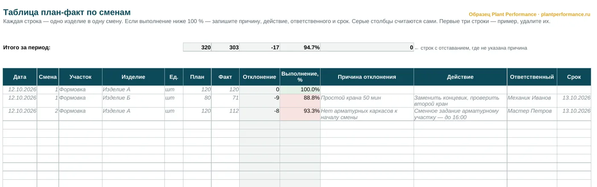
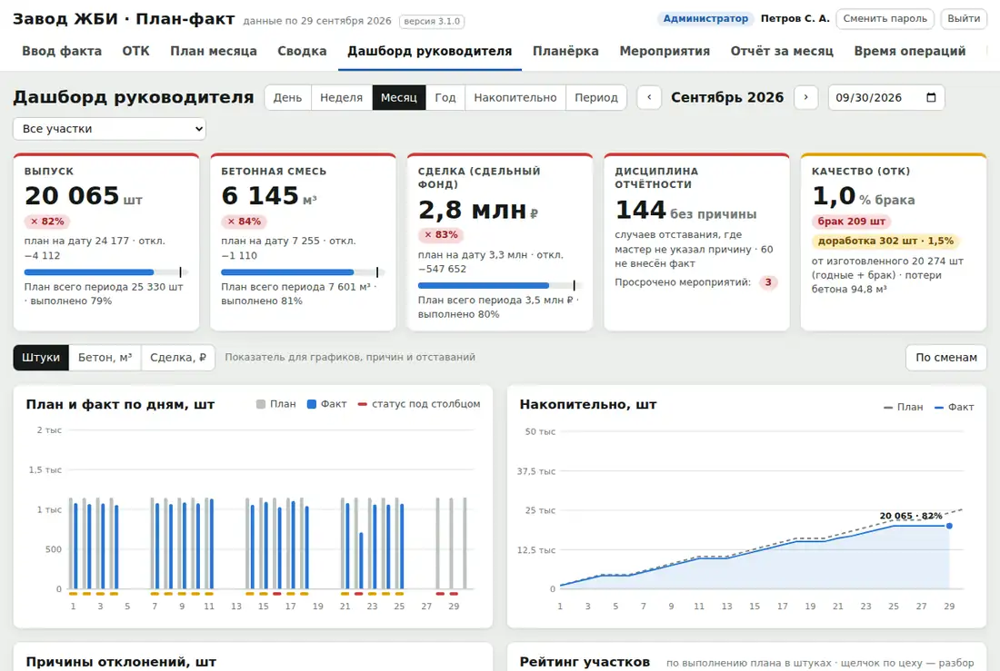

Plant Performance / Образец: таблица план-факт
Бесплатный образец
Таблица план-факт по сменамобразец в Excel с расчётом отклонений — скачать бесплатно
План-факт анализ на производстве начинается не с программы, а с простой таблицы: что должны были сделать, что сделали и почему разница. В этой таблице отклонение и процент выполнения считаются сами, а строка с отставанием без причины подсвечивается красным.
Файл Excel, 19 КБ, без регистрации. Открывается в Excel и LibreOffice, печатается на А4.
Это простая форма — чтобы начать. Есть полная версия: план по дням на месяц, журнал изменений плана, свод с прогнозом на конец месяца и графики причин отклонений. Пришлём бесплатно — напишите в Telegram или позвоните.
А в программе «План-факт» всё это уже заложено и считается само.

Что в таблице
- Дата, смена, участок, изделие, единица учёта
- План и факт смены — вводите вы
- Отклонение и процент выполнения — считаются сами
- Цвет: ниже 95 % — красный, 95–100 % — жёлтый, от 100 % — зелёный
- Причина отклонения, действие, ответственный и срок
- Итог за период и счётчик строк с отставанием, где не указана причина
Как считается отклонение план-факт
- Отклонение = факт − план. Минус — недовыпуск.
- Выполнение = факт ÷ план × 100 %.
- Итог за период — сумма плана и факта по всем строкам; выполнение за период считается от сумм, а не как среднее процентов.
- Пороги цвета — в правилах условного форматирования, их можно поменять под свой завод.
Как вести план-факт по сменам, чтобы он работал
Таблица сама по себе ничего не меняет. Работает порядок вокруг неё.
- План — до начала смены, в тех же единицах, в которых считается факт. План, который меняют задним числом, перестаёт быть планом.
- Факт — в конце каждой смены, мастером участка. Не в конце недели и не по памяти.
- Отклонение без причины не закрывается. «Так получилось» — не причина. Причина — то, что можно устранить: простой крана, нет каркасов к началу смены, нет сменного задания.
- У действия — один ответственный и дата. Фамилия, а не отдел.
- На совещании — только красные строки. Что идёт по плану, не обсуждают. Совещание укладывается в 15 минут.
- Раз в неделю — повторяющиеся причины. Если одна и та же причина встречается третий раз, устранили следствие, а не её саму.
Когда таблицы становится мало
Таблица держится, пока её ведёт один аккуратный человек на одном участке. Когда участков несколько, начинается привычное: файл правят задним числом, факт приходит к обеду, свести к совещанию не успевают, поручения теряются.
В программе «План-факт» мастер вносит факт смены, ОТК — брак, оператор — простой с телефона. План нельзя тихо переписать, отставание видно на следующее утро, совещание идёт по экрану, а протокол с поручениями и сроками собирается сам.

Напишите нам
Расскажите в двух строках, что за завод и что хотите посмотреть или автоматизировать. Ответим, покажем программу в работе и пришлём документы, которых нет на сайте.